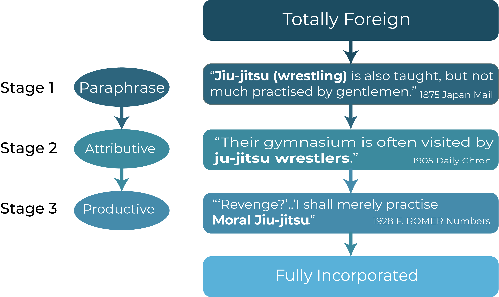
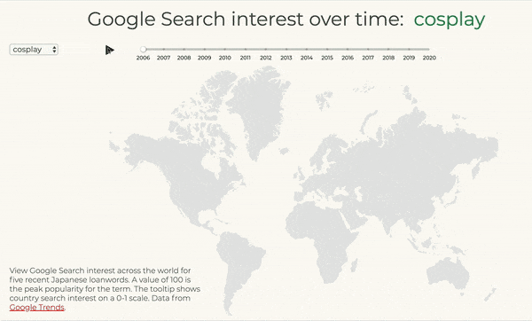

Timeline data: Japan Ministry of Foreign Affairs, Japan Guide, World Bank, BBC, Wikipedia and SEDAC.
100 more frequent out of 530 total Japanese loanwords in the online edition of the Oxford English Dictionary. On a 1-8 scale, Band 3 contains words which occur between 0.01 and 0.1 times per million words in typical modern English usage. Band 4 words occur between 0.1 and 1.0 times per million words, and Band 5 words between 1 and 10 times per million words. The most recent citation for a Japanese loanword in the OED is Sudoku, cited in 2000. Pronunciations are in American and British English.
TOP TEN CATEGORIES OF JAPANESE LOANWORDS IN THE OED
Food & Drink, Martial Arts and Arts & Crafts are the top three categories of Japanese words in the Oxford English Dictionary, indicating the impact of different aspects of Japanese culture on the English-speaking world.
JAPANESE LOANWORD NATURALIZATION STAGES
Linguists have developed measures to understand the naturalization process of loanwords. Kinjo Gakuin University researcher Schun Doi created this schematic to analyze Japanese loanwords in the Oxford English Dictionary, the world's most authoritative English lexicon. The schematic places loanwords on a continuum with three general stages in their transition from totally Japanese to full incorporation into the English lexicon.
{{ chartTitle }}
Japanese has contributed the second most loanwords to the Oxford English Dictionary among Asian languages. Japan's large contribution comes despite the nation's history of isolation and the fact that it was never colonized by an English-speaking country.
{{ chartTitle }}
Historians point to three waves of Japanophilia: the first in the late 1800s after Japan opened to the world and Westerners experienced Japanese arts and crafts at events like the 1876 Philadelphia Expo; the second after WWII when Westerners discovered Zen Buddhism and Japanese poetry; and the third, pop culture-driven wave currently underway. The addition of loanwords to the OED reflects these waves. The surge of words in the 1720s shows the impact of the publication of Kæmpfer's History of Japan.
JAPANESE LOANWORDS IN THE NEW YORK TIMES
Explore 12 Japanese loanwords ordered from their first appearance in the New York Times to the present. The terms progress from older waves of Japanophilia to recent terms representing the 'Cool Japan' boom. Spikes in interest can be observed, such as one for 'geisha' in the 2000s following the release of the book and film Memoirs of a Geisha.
ANIMATED WORD MAPS
View the rise and fall of Japanese loanwords geographically over time by Google Search interest. Single Words represent contemporary Japan; Word Pairs show the changing interest in words representing traditional and contemporary Japan.